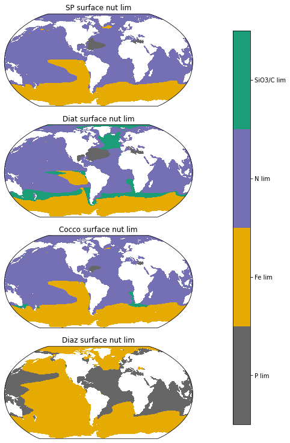
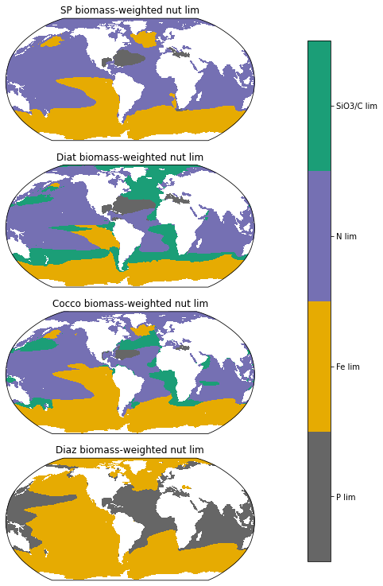
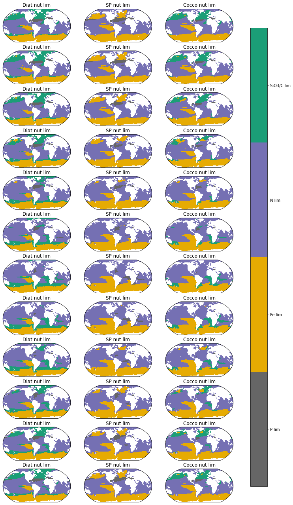
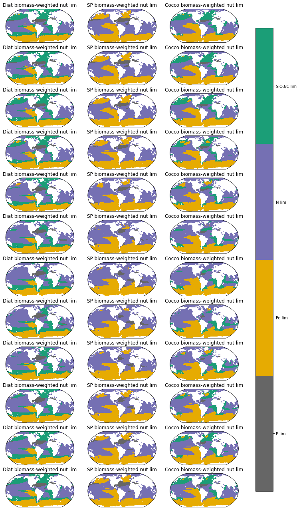

Phytoplankton nutrient limitation maps
%load_ext autoreload
%autoreload 2
import xarray as xr
from dask.distributed import Client
import catalog
import util
xr.set_options(keep_attrs=True)
import matplotlib.pyplot as plt
import cartopy
import cartopy.crs as ccrs
import pop_tools
import utils
import numpy as np
import pandas as pd
ds_grid = pop_tools.get_grid('POP_gx1v7')
lons=ds_grid.TLONG
lats=ds_grid.TLAT
Parameters
casename = 'g.e22.GOMIPECOIAF_JRA-1p4-2018.TL319_g17.4p2z.001'
component = 'pop'
stream = 'h'
cluster_scheduler_address = None
assert component in ['pop']
assert stream in ['h', 'h.ecosys.nday1']
Connect to cluster
if cluster_scheduler_address is None:
cluster, client = util.get_ClusterClient()
cluster.scale(12)
else:
client = Client(cluster_scheduler_address)
client
Client
Client-58cf507a-23c5-11ed-bb8f-3cecef1b12e6
| Connection method: Cluster object | Cluster type: dask_jobqueue.PBSCluster |
| Dashboard: https://jupyterhub.hpc.ucar.edu/stable/user/kristenk/proxy/8787/status |
Cluster Info
PBSCluster
f32ac096
| Dashboard: https://jupyterhub.hpc.ucar.edu/stable/user/kristenk/proxy/8787/status | Workers: 0 |
| Total threads: 0 | Total memory: 0 B |
Scheduler Info
Scheduler
Scheduler-2baee6cc-d2d9-440d-a553-6d78fb3a561d
| Comm: tcp://10.12.206.23:38133 | Workers: 0 |
| Dashboard: https://jupyterhub.hpc.ucar.edu/stable/user/kristenk/proxy/8787/status | Total threads: 0 |
| Started: Just now | Total memory: 0 B |
Workers
Load the data
dsets = catalog.to_dataset_dict(
case=casename,
component=component,
stream=stream,
)
dsets.keys()
g.e22.GOMIPECOIAF_JRA-1p4-2018.TL319_g17.4p2z.001 pop h /glade/scratch/kristenk/archive
dict_keys(['g.e22.GOMIPECOIAF_JRA-1p4-2018.TL319_g17.4p2z.001.pop.h'])
Compute long-term mean and plot
ds = dsets[f'{casename}.{component}.{stream}']
Variable list
variables =['sp_Fe_lim_Cweight_avg_100m','sp_P_lim_Cweight_avg_100m','sp_N_lim_Cweight_avg_100m',
'diat_Fe_lim_Cweight_avg_100m', 'diat_P_lim_Cweight_avg_100m','diat_N_lim_Cweight_avg_100m',
'diat_SiO3_lim_Cweight_avg_100m','diaz_P_lim_Cweight_avg_100m',
'diaz_Fe_lim_Cweight_avg_100m','cocco_Fe_lim_Cweight_avg_100m','cocco_C_lim_Cweight_avg_100m','cocco_N_lim_Cweight_avg_100m',
'cocco_P_lim_Cweight_avg_100m','sp_Fe_lim_surf','sp_P_lim_surf','sp_N_lim_surf',
'diat_Fe_lim_surf', 'diat_P_lim_surf','diat_N_lim_surf','diat_SiO3_lim_surf',
'diaz_P_lim_surf','cocco_Fe_lim_surf','cocco_C_lim_surf','cocco_N_lim_surf',
'cocco_P_lim_surf','diaz_Fe_lim_surf']
keep_vars=['z_t','z_t_150m','dz','time_bound','time','TAREA','TLAT','TLONG'] + variables
ds = ds.drop([v for v in ds.variables if v not in keep_vars])
Make a monthly climatology dataset
time = pd.date_range(start="2009-01-01", end="2019-01-01",freq="M")
mon_ds = ds.copy()
mon_ds['time'] = time
mon_ds = ds.groupby('time.month').mean('time')
Compute long-term mean
dt_wgt = ds.time_bound.diff('d2').squeeze()
dt_wgt /= dt_wgt.sum()
dt_wgt
<xarray.DataArray 'time_bound' (time: 120)>
dask.array<truediv, shape=(120,), dtype=float64, chunksize=(1,), chunktype=numpy.ndarray>
Coordinates:
* time (time) object 0296-01-16 12:00:00 ... 0305-12-16 12:00:00
Attributes:
long_name: boundaries for time-averaging interval
units: days since 0000-01-01 00:00:00ds = ds.weighted(dt_wgt).mean('time')
Phytoplankton limitations at the surface
#most limiting nutrient - concatenate the limitation terms so that nutrient limitation terms are each along the 'nutrient' dimension
# 0 = PO4
# 1 = Fe
# 2 = NO3 (only for sp and diat)
# 3 = Si (only for diat)
# 3 = C (only for cocco)
limarray_sp=xr.concat((ds.sp_P_lim_surf, ds.sp_Fe_lim_surf,ds.sp_N_lim_surf),dim='nutrient')
limarray_diat=xr.concat((ds.diat_P_lim_surf, ds.diat_Fe_lim_surf, ds.diat_N_lim_surf, ds.diat_SiO3_lim_surf),dim='nutrient')
limarray_diaz=xr.concat((ds.diaz_P_lim_surf, ds.diaz_Fe_lim_surf),dim='nutrient')
limarray_cocco=xr.concat((ds.cocco_P_lim_surf, ds.cocco_Fe_lim_surf, ds.cocco_N_lim_surf, ds.cocco_C_lim_surf),dim='nutrient')
most_lim_sp=limarray_sp.argmin(dim='nutrient', skipna=False).squeeze()
most_lim_diat=limarray_diat.argmin(dim='nutrient', skipna=False).squeeze()
most_lim_diaz=limarray_diaz.argmin(dim='nutrient', skipna=False).squeeze()
most_lim_cocco=limarray_cocco.argmin(dim='nutrient', skipna=False).squeeze()
mask = np.isnan(ds.sp_N_lim_surf.squeeze())
fig = plt.figure(figsize=(8,13))
colorbar_specs = {'ticks' : np.arange(0,4,1)}
ax = fig.add_subplot(4,1,2, projection=ccrs.Robinson(central_longitude=305.0))
ax.set_title('Diat surface nut lim', fontsize=12)
lon, lat, field = utils.adjust_pop_grid(lons, lats, most_lim_diat.where(~mask))
pc=ax.pcolormesh(lon, lat, field, cmap=plt.cm.get_cmap('Dark2_r',4),vmin=-0.5,vmax=3.5,transform=ccrs.PlateCarree())
ax = fig.add_subplot(4,1,1, projection=ccrs.Robinson(central_longitude=305.0))
ax.set_title('SP surface nut lim', fontsize=12)
lon, lat, field = utils.adjust_pop_grid(lons, lats, most_lim_sp.where(~mask))
pc=ax.pcolormesh(lon, lat, field, cmap=plt.cm.get_cmap('Dark2_r',4),vmin=-0.5,vmax=3.5,transform=ccrs.PlateCarree())
ax = fig.add_subplot(4,1,3, projection=ccrs.Robinson(central_longitude=305.0))
ax.set_title('Cocco surface nut lim', fontsize=12)
lon, lat, field = utils.adjust_pop_grid(lons, lats, most_lim_cocco.where(~mask))
pc=ax.pcolormesh(lon, lat, field, cmap=plt.cm.get_cmap('Dark2_r',4),vmin=-0.5,vmax=3.5,transform=ccrs.PlateCarree())
ax = fig.add_subplot(4,1,4, projection=ccrs.Robinson(central_longitude=305.0))
ax.set_title('Diaz surface nut lim', fontsize=12)
lon, lat, field = utils.adjust_pop_grid(lons, lats, most_lim_diaz.where(~mask))
pc=ax.pcolormesh(lon, lat, field, cmap=plt.cm.get_cmap('Dark2_r',4),vmin=-0.5,vmax=3.5,transform=ccrs.PlateCarree())
fig.subplots_adjust(right=0.8)
cbar_ax = fig.add_axes([0.85, 0.15, 0.05, 0.7])
cbar = fig.colorbar(pc, cax=cbar_ax,**colorbar_specs)
cbar.ax.set_yticklabels(['P lim', 'Fe lim', 'N lim','SiO3/C lim']);

Biomass weighted phytoplankton limitations in the top 100m
#most limiting nutrient - concatenate the limitation terms so that nutrient limitation terms are each along the 'nutrient' dimension
# 0 = PO4
# 1 = Fe
# 2 = NO3 (only for sp and diat)
# 3 = Si (only for diat)
# 3 = C (only for cocco)
limarray_sp=xr.concat((ds.sp_P_lim_Cweight_avg_100m, ds.sp_Fe_lim_Cweight_avg_100m,ds.sp_N_lim_Cweight_avg_100m),dim='nutrient')
limarray_diat=xr.concat((ds.diat_P_lim_Cweight_avg_100m, ds.diat_Fe_lim_Cweight_avg_100m, ds.diat_N_lim_Cweight_avg_100m, ds.diat_SiO3_lim_Cweight_avg_100m),dim='nutrient')
limarray_diaz=xr.concat((ds.diaz_P_lim_Cweight_avg_100m, ds.diaz_Fe_lim_Cweight_avg_100m),dim='nutrient')
limarray_cocco=xr.concat((ds.cocco_P_lim_Cweight_avg_100m, ds.cocco_Fe_lim_Cweight_avg_100m, ds.cocco_N_lim_Cweight_avg_100m, ds.cocco_C_lim_Cweight_avg_100m),dim='nutrient')
most_lim_sp=limarray_sp.argmin(dim='nutrient', skipna=False).squeeze()
most_lim_diat=limarray_diat.argmin(dim='nutrient', skipna=False).squeeze()
most_lim_diaz=limarray_diaz.argmin(dim='nutrient', skipna=False).squeeze()
most_lim_cocco=limarray_cocco.argmin(dim='nutrient', skipna=False).squeeze()
mask = np.isnan(ds.sp_N_lim_surf.squeeze())
fig = plt.figure(figsize=(8,13))
colorbar_specs = {'ticks' : np.arange(0,4,1)}
ax = fig.add_subplot(4,1,2, projection=ccrs.Robinson(central_longitude=305.0))
ax.set_title('Diat biomass-weighted nut lim', fontsize=12)
lon, lat, field = utils.adjust_pop_grid(lons, lats, most_lim_diat.where(~mask))
pc=ax.pcolormesh(lon, lat, field, cmap=plt.cm.get_cmap('Dark2_r',4),vmin=-0.5,vmax=3.5,transform=ccrs.PlateCarree())
ax = fig.add_subplot(4,1,1, projection=ccrs.Robinson(central_longitude=305.0))
ax.set_title('SP biomass-weighted nut lim', fontsize=12)
lon, lat, field = utils.adjust_pop_grid(lons, lats, most_lim_sp.where(~mask))
pc=ax.pcolormesh(lon, lat, field, cmap=plt.cm.get_cmap('Dark2_r',4),vmin=-0.5,vmax=3.5,transform=ccrs.PlateCarree())
ax = fig.add_subplot(4,1,3, projection=ccrs.Robinson(central_longitude=305.0))
ax.set_title('Cocco biomass-weighted nut lim', fontsize=12)
lon, lat, field = utils.adjust_pop_grid(lons, lats, most_lim_cocco.where(~mask))
pc=ax.pcolormesh(lon, lat, field, cmap=plt.cm.get_cmap('Dark2_r',4),vmin=-0.5,vmax=3.5,transform=ccrs.PlateCarree())
ax = fig.add_subplot(4,1,4, projection=ccrs.Robinson(central_longitude=305.0))
ax.set_title('Diaz biomass-weighted nut lim', fontsize=12)
lon, lat, field = utils.adjust_pop_grid(lons, lats, most_lim_diaz.where(~mask))
pc=ax.pcolormesh(lon, lat, field, cmap=plt.cm.get_cmap('Dark2_r',4),vmin=-0.5,vmax=3.5,transform=ccrs.PlateCarree())
fig.subplots_adjust(right=0.8)
cbar_ax = fig.add_axes([0.85, 0.15, 0.05, 0.7])
cbar = fig.colorbar(pc, cax=cbar_ax,**colorbar_specs)
cbar.ax.set_yticklabels(['P lim', 'Fe lim', 'N lim','SiO3/C lim']);

Monthly climatology of surface phytoplankton limitations
#most limiting nutrient - concatenate the limitation terms so that nutrient limitation terms are each along the 'nutrient' dimension
# 0 = PO4
# 1 = Fe
# 2 = NO3 (only for sp and diat)
# 3 = Si (only for diat)
# 3 = C (only for cocco)
limarray_sp=xr.concat((mon_ds.sp_P_lim_surf, mon_ds.sp_Fe_lim_surf,mon_ds.sp_N_lim_surf),dim='nutrient')
limarray_diat=xr.concat((mon_ds.diat_P_lim_surf, mon_ds.diat_Fe_lim_surf, mon_ds.diat_N_lim_surf, mon_ds.diat_SiO3_lim_surf),dim='nutrient')
limarray_diaz=xr.concat((mon_ds.diaz_P_lim_surf, mon_ds.diaz_Fe_lim_surf),dim='nutrient')
limarray_cocco=xr.concat((mon_ds.cocco_P_lim_surf, mon_ds.cocco_Fe_lim_surf, mon_ds.cocco_N_lim_surf, mon_ds.cocco_C_lim_surf),dim='nutrient')
most_lim_sp=limarray_sp.argmin(dim='nutrient', skipna=False)
most_lim_diat=limarray_diat.argmin(dim='nutrient', skipna=False)
most_lim_diaz=limarray_diaz.argmin(dim='nutrient', skipna=False)
most_lim_cocco=limarray_cocco.argmin(dim='nutrient', skipna=False)
mask = np.isnan(ds.sp_N_lim_surf.squeeze())
fig = plt.figure(figsize=(12,23))
for row in np.arange(1,13):
ts=row-1
plot = row*3 - 2
#row 1 Jan
ax = fig.add_subplot(12,3,plot, projection=ccrs.Robinson(central_longitude=305.0))
ax.set_title('Diat surface nut lim', fontsize=12)
lon, lat, field = utils.adjust_pop_grid(lons, lats, most_lim_diat.isel(month=ts).where(~mask))
pc=ax.pcolormesh(lon, lat, field, cmap=plt.cm.get_cmap('Dark2_r',4),vmin=-0.5,vmax=3.5,transform=ccrs.PlateCarree())
colorbar_specs = {'ticks' : np.arange(0,4,1)}
plot = row*3 - 1
ax = fig.add_subplot(12,3,plot, projection=ccrs.Robinson(central_longitude=305.0))
ax.set_title('SP surface nut lim', fontsize=12)
lon, lat, field = utils.adjust_pop_grid(lons, lats, most_lim_sp.isel(month=ts).where(~mask))
pc=ax.pcolormesh(lon, lat, field, cmap=plt.cm.get_cmap('Dark2_r',4),vmin=-0.5,vmax=3.5,transform=ccrs.PlateCarree())
colorbar_specs = {'ticks' : np.arange(0,4,1)}
plot = row*3
ax = fig.add_subplot(12,3,plot, projection=ccrs.Robinson(central_longitude=305.0))
ax.set_title('Cocco surface nut lim', fontsize=12)
lon, lat, field = utils.adjust_pop_grid(lons, lats, most_lim_cocco.isel(month=ts).where(~mask))
pc=ax.pcolormesh(lon, lat, field, cmap=plt.cm.get_cmap('Dark2_r',4),vmin=-0.5,vmax=3.5,transform=ccrs.PlateCarree())
colorbar_specs = {'ticks' : np.arange(0,4,1)}
fig.subplots_adjust(right=0.8)
cbar_ax = fig.add_axes([0.85, 0.15, 0.05, 0.7])
cbar = fig.colorbar(pc, cax=cbar_ax,**colorbar_specs)
cbar.ax.set_yticklabels(['P lim', 'Fe lim', 'N lim','SiO3/C lim']);

Monthly climatology of biomass-weighted phytoplankton nutrient limitation terms over the top 100m
#most limiting nutrient - concatenate the limitation terms so that nutrient limitation terms are each along the 'nutrient' dimension
# 0 = PO4
# 1 = Fe
# 2 = NO3 (only for sp and diat)
# 3 = Si (only for diat)
# 3 = C (only for cocco)
limarray_sp=xr.concat((mon_ds.sp_P_lim_Cweight_avg_100m, mon_ds.sp_Fe_lim_Cweight_avg_100m,mon_ds.sp_N_lim_Cweight_avg_100m),dim='nutrient')
limarray_diat=xr.concat((mon_ds.diat_P_lim_Cweight_avg_100m, mon_ds.diat_Fe_lim_Cweight_avg_100m, mon_ds.diat_N_lim_Cweight_avg_100m, mon_ds.diat_SiO3_lim_Cweight_avg_100m),dim='nutrient')
limarray_diaz=xr.concat((mon_ds.diaz_P_lim_Cweight_avg_100m, mon_ds.diaz_Fe_lim_Cweight_avg_100m),dim='nutrient')
limarray_cocco=xr.concat((mon_ds.cocco_P_lim_Cweight_avg_100m, mon_ds.cocco_Fe_lim_Cweight_avg_100m, mon_ds.cocco_N_lim_Cweight_avg_100m, mon_ds.cocco_C_lim_Cweight_avg_100m),dim='nutrient')
most_lim_sp=limarray_sp.argmin(dim='nutrient', skipna=False)
most_lim_diat=limarray_diat.argmin(dim='nutrient', skipna=False)
most_lim_diaz=limarray_diaz.argmin(dim='nutrient', skipna=False)
most_lim_cocco=limarray_cocco.argmin(dim='nutrient', skipna=False)
mask = np.isnan(ds.sp_N_lim_surf.squeeze())
fig = plt.figure(figsize=(12,23))
for row in np.arange(1,13):
ts=row-1
plot = row*3 - 2
#row 1 Jan
ax = fig.add_subplot(12,3,plot, projection=ccrs.Robinson(central_longitude=305.0))
ax.set_title('Diat biomass-weighted nut lim', fontsize=12)
lon, lat, field = utils.adjust_pop_grid(lons, lats, most_lim_diat.isel(month=ts).where(~mask))
pc=ax.pcolormesh(lon, lat, field, cmap=plt.cm.get_cmap('Dark2_r',4),vmin=-0.5,vmax=3.5,transform=ccrs.PlateCarree())
colorbar_specs = {'ticks' : np.arange(0,4,1)}
plot = row*3 - 1
ax = fig.add_subplot(12,3,plot, projection=ccrs.Robinson(central_longitude=305.0))
ax.set_title('SP biomass-weighted nut lim', fontsize=12)
lon, lat, field = utils.adjust_pop_grid(lons, lats, most_lim_sp.isel(month=ts).where(~mask))
pc=ax.pcolormesh(lon, lat, field, cmap=plt.cm.get_cmap('Dark2_r',4),vmin=-0.5,vmax=3.5,transform=ccrs.PlateCarree())
colorbar_specs = {'ticks' : np.arange(0,4,1)}
plot = row*3
ax = fig.add_subplot(12,3,plot, projection=ccrs.Robinson(central_longitude=305.0))
ax.set_title('Cocco biomass-weighted nut lim', fontsize=12)
lon, lat, field = utils.adjust_pop_grid(lons, lats, most_lim_cocco.isel(month=ts).where(~mask))
pc=ax.pcolormesh(lon, lat, field, cmap=plt.cm.get_cmap('Dark2_r',4),vmin=-0.5,vmax=3.5,transform=ccrs.PlateCarree())
colorbar_specs = {'ticks' : np.arange(0,4,1)}
fig.subplots_adjust(right=0.8)
cbar_ax = fig.add_axes([0.85, 0.15, 0.05, 0.7])
cbar = fig.colorbar(pc, cax=cbar_ax,**colorbar_specs)
cbar.ax.set_yticklabels(['P lim', 'Fe lim', 'N lim','SiO3/C lim']);
